During the exam, each participant will be assigned several questions from the list. The participant will be given 7-10 minutes to prepare an answer.
Please, keep in mind that when answering a question, the scope of the question may be expanded, i.e. you may be asked a question related to the main question you were assigned, but not listed here. All of them, however, will cover the material that was discussed during the course.
In addition, several questions may be asked about your project or Homework, especially if mistakes or other deficiencies will be identified in the models (incl., inconsistencies or a preference was given to an approach that is different from what is considered to be a best-practice etc.).
The grade will be made known during the exam by the end of the discussion.
1. What steps constitute a software development methodology? What questions are expected to be answered by them? What models are expected to answer those questions?
a. Software development follows the steps of trying to find the most acceptable and efficient solution to a given problem. Through the steps of identifying, planning, executing, and delivering, a team is able to deliver a product. With maintenance, a piece of software can be in constant development and improvement.
b. Questions include: what can we do? Why are we doing it? How will it benefit us and the end user?
c. There are many different models, but they were combined into the UML (unified modelling language) to be able to have a concise and unified language to repsond to the needs of automation of software production, quality improvement concerns, reducing costs and time-to-market, and architecutral problems such as physical distribution, concurrency, replication, security, load balancing, and fault tolerance. The models within UML include
i. Class diagrams, object diagrams, sequence diagrams, activity diagrams, use case diagrams, state machine diagrams, etc.
2. What are the two types of class models? What is the purpose of each and what are the differences between them? At which steps is their development expected? Provide a simple example of a class diagram.
a. The two different types of class models are domain and application models.
b. They both serve to portray a system and the interactions within that system. It shows the structure of objects within that system and their relationships.
c. The key differences between these two types of class models are that domain class models provide classes with attributes and relations among them, without operations, while an application model provides these operations.
d. In the development cycle, the domain model comes first, as it serves as an overview and representation of entities of the domain. Through interaction modelling, the developers can then see what operations are needed to implement functionalities and to create the application model.
e. 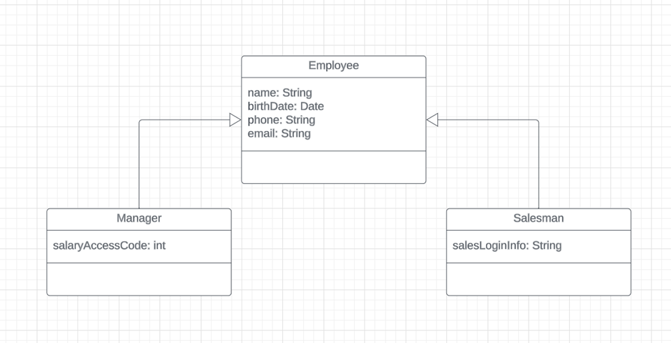
3. What is the purpose of aggregation and composition in class diagrams? And how are they different? Provide an example for each of them.
a. Aggregation is when a class has a collection of parts where the parts can exist independently of the whole, whereas compositions represent a stronger relationship where the class is composed of parts, but the parts cannot be independent from their whole. Both of their purposes are to display relationships between classes, with composition depicting a stronger bond between classes.
b. Aggregation example ¨C 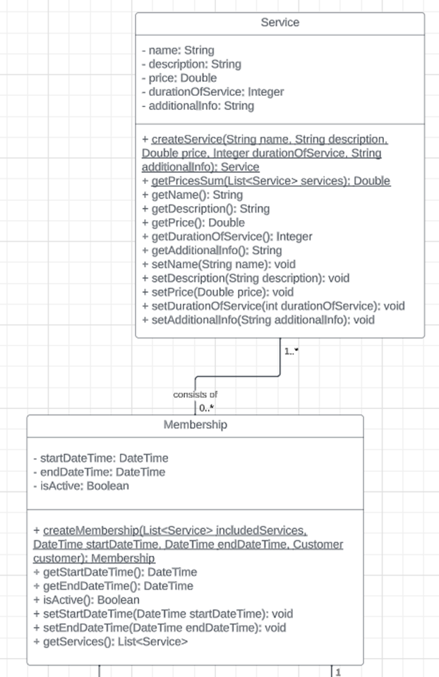
i. A service can continue to live on even if a membership is not present
c. Composition example ¨C 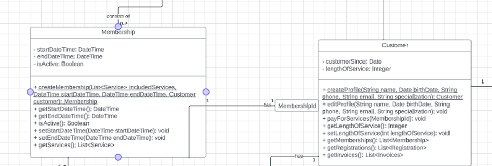
i. If the customer (whole) cancels their membership, then that part ceases to exist
4. What is the purpose of an enumeration in class diagrams? How is it different from generalization? Provide an example for each of them.
a. An enumeration is a data type that has a set of finite values.
b. It is different from generalizations in the sense that generalizations establish inheritance between classes for signifying a ¡°is a¡± relationship, whereas enumerations are used for finite values.
c. Enumeration example ¨C 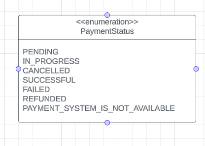
d. Generalization example ¨C 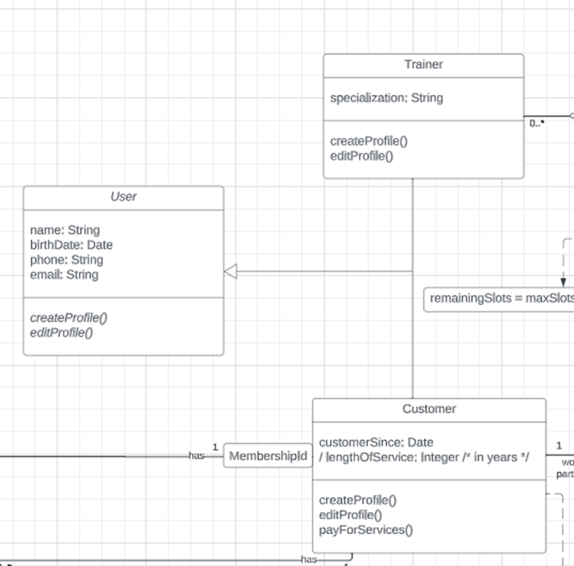
5. What is derived data in a class diagram? What is the benefit of having it? Provide an example of derived data.
a. Derived data is data which can be determined from another piece of data. They do not (usually) store independent data, but rather computed data based on existing data.
b. Derived data is good to have when looking at the accuracy of a system
6. What does abstraction mean in a class diagram? What elements can be made into an abstract? What is the benefit of having them? Provide an example of an abstract element.
a. In a class diagram, an abstraction refers to an abstract class which has no direct instances. It aims to present only relevant operations and common properties.
b. Elements which can be made abstract are methods, which inherited subclasses must provide their own implementations, and classes, which can provide such methods to subclasses.
c. The benefit of having something abstract is to allow reusability and a form of generalization and reusability.
d. 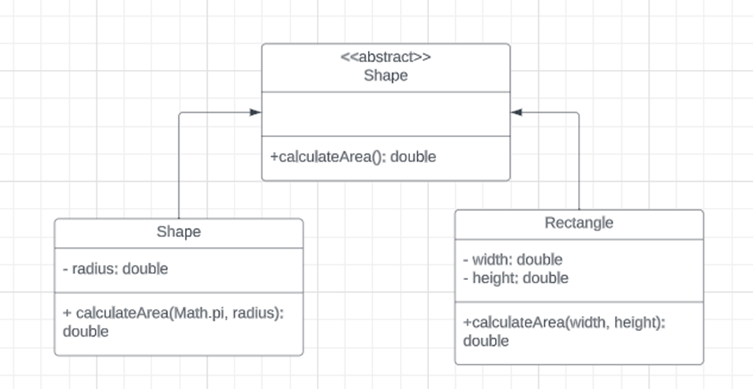
7.
Prepare a class (domain) diagram for Figure 1. Keep it as close to
the description as possible, but when the details are lacking, rely on your
assumption. Extend the class (domain) diagram to class (application) diagram.
How do they differ?
https://lucid.app/lucidchart/a764ff28-9fa2-4ab4-830a-2fbf06a585a3/edit?beaconFlowId=BDF0842CEB350E9F&invitationId=inv_8d265d31-45e0-4d7e-97db-e6462b003446&page=0_0#
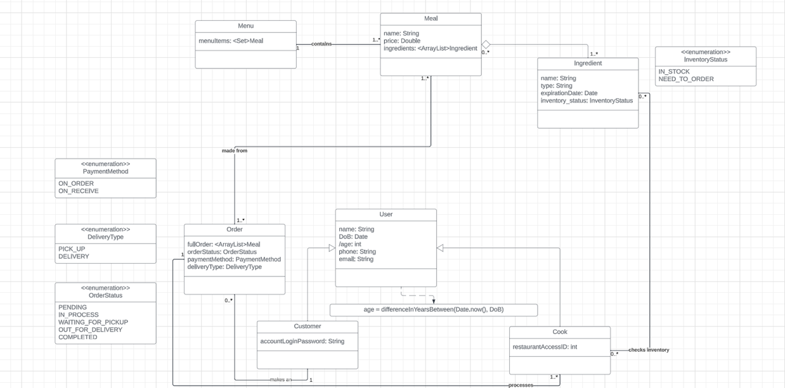
8. Describe the purpose of (1) class model, (2) use-case diagram, (3) sequence diagram, (4) statechart diagram, (5) activity diagram. How could they be classified? Are you expected to use all of them when developing or testing a system? Why? If not, what would affect your choice? (among the main factors that should affect your choice, reflect also on your personal experience, i.e. how useful you found them for you; which of them would you use, and which - probably not, and why)? Is it possible to select one of the above models to establish an understanding of the system being designed, developed or tested? Why?
i. The purpose of a class model Is to get an overview of the system in its entirety, to see how classes interact with each other, and in application models, to show which operations are needed for which class.
ii. A use case diagram is here to present how the system interacts with outside actors at a high level. Each use case in the diagram represents a functionality that a system provides to the user
iii. A sequence diagram is used to present operations that the classes in a system need to expose for implementing functionalities. It is used to document where operations come into play and how they interact with the system.
iv. Statechart diagrams are used to capture the behavior of objects. It tracks to see different phases of an object, and it displays states, operations, and triggers.
v. An activity diagram serves the purpose of representing the flow from one activity to another in terms of steps involved in the execution of a use case.
b. All of these diagrams can be classified as a representation of a system in its entirety. Some show more specific parts of the system while others go into more detail on certain operations within the system.
c. Each of these diagrams can be used to develop an entire system, but it is not expected that you need to use all of them. While using all of them can be useful, it may lead to overengineering or complexity issues, or potentially it can be more than what the client has asked for. Based on personal experience, there were times when a client would not want that many details about their system, so only something like a class model, use case diagram, and activity diagram were needed. For me personally, I found that usually a class diagram (application) is the best option, as there are many cases where that is only relevant.
d. If I had to pick any of the above, the most logical would be a class diagram, as that encompasses the whole system.
9. What opportunities does generalization provide you? What diagrams and their elements suppose/allow the use of generalization? Provide at least two examples of different types of generalization (refers to different diagrams and elements)
a. Generalization allows for code reusability and polymorphism. This makes code more concise to read and reduces unneeded code.
b. Class diagrams allow for generalization, specifically when grouped into classes and subclasses. Inheritance is one of the main features of generalization.
c. 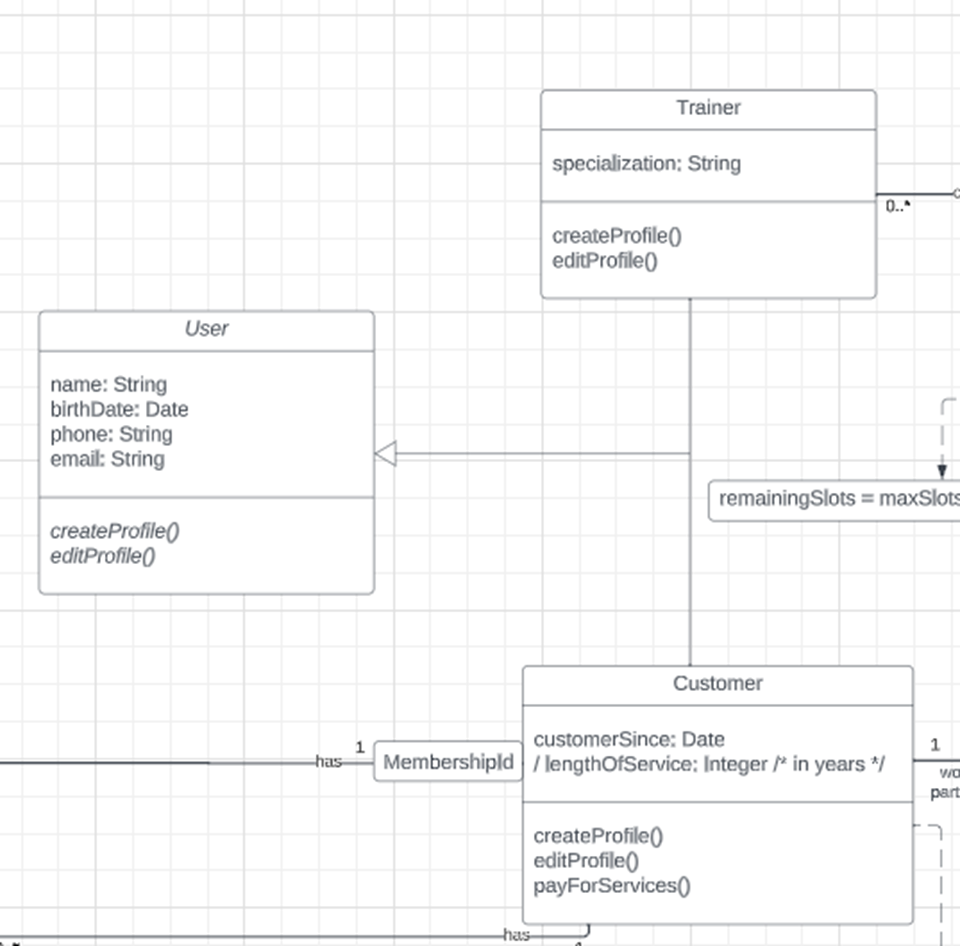
d. 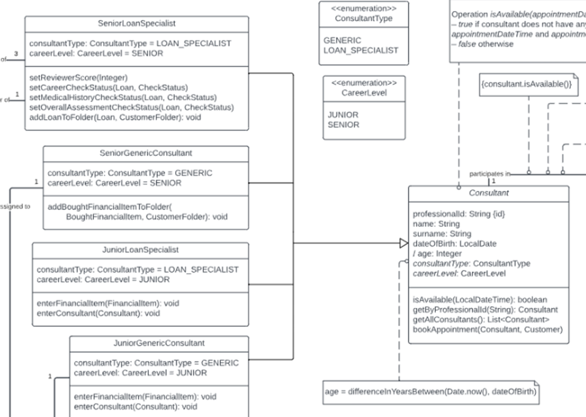
10. What determines the level of detail of the developed diagram?
a. The level of detail of a diagram depends on the stage that the system is currently at while being built. If it is at an earlier level of development, then the class diagram (for example) is simpler, while later, it becomes more complex (application) because the developer(s) have found which operations are needed through interaction modelling.
11. Describe the process of designing a use case model. What are the main elements of this model? Prepare a simple use case model and reflect on it. Where additional detail complementing it can be gained? What are other elements you can use to enrich your use-case diagram? What can be alternatives for use-case diagrams?
a. 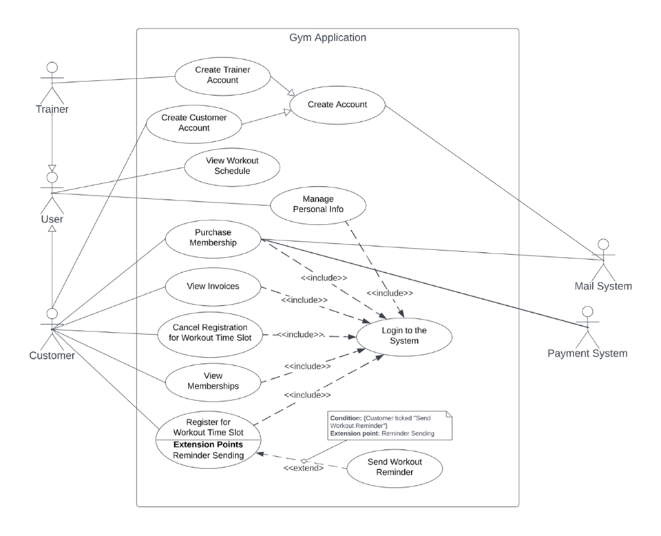
b. A use case model describes how a system interacts with outside actors. It usually stems after creating a class diagram. The process of making one is defined by both a use case diagram, and a description of each use case and how it ¡°flows¡±. You need to find actors, aka an external user of the system, and the system with which they interact. A rectangle contains the use cases for a system with the actors listed on the outside. The name of the system is written near the top of the rectangle. Ellipses denote use cases, and a stick man icon represents an actor. Solid lines connect use cases to actors, and when use cases are linked to others, such as include, extend, generalize (see account creation), and package, they are either denoted with a dotted line, a divided ellipsis, or a box to denote a group of cases in a package.
c. Alternatives to use case diagrams include:
i. User stories: they are written in the language of the user, they capture who what and why.
ii. Storyboards (¡°detailed¡± user stories¡±): sketch of how a user will perform a task, shows the interactions and relevant objects (or screens), used in UI design
12. Prepare a use-case model for Figure 1. Keep it as close to the description as possible, but when the details are lacking, rely on your assumption.
a. 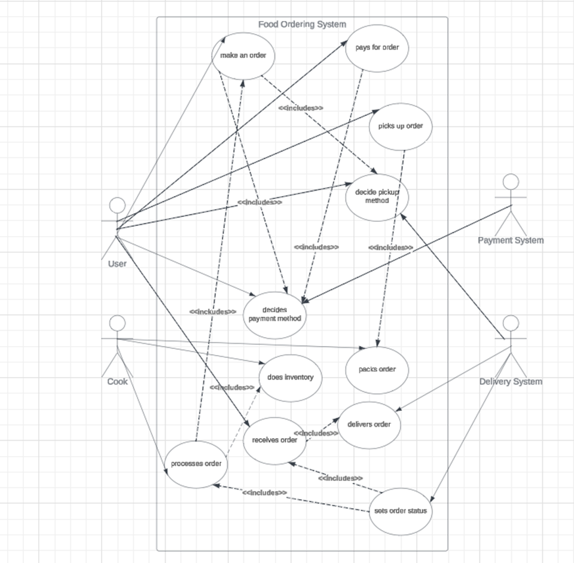
13. Read the diagram in Figure 2, i.e. describe what it designs. Reflect on it, its correctness, deficiencies (if any). When reflecting on it, use the questions of the previous task.
a. Mention how some use cases should be separated from staff and student
i. They should maybe have different login functions
b. Mention stuff with DB
i. The DB should be included in some login functionalities and check to see if books are available if not explicitly included
c. Librarian ¨C potential generalization into user?
14. Read the diagram in Figure 3, i.e. describe what it designs. Reflect on it, its correctness, deficiencies (if any). When reflecting on it, use the questions of the previous task.
a. Name of the system should not be the same as the model itself
i. The name in the rectangle
b. Potential generalization of admin and passenger?
c. Admin should be able to login?
15. Describe the process of designing a sequence diagram. What two dimensions should you be thinking about? Are there any specifics you should keep in mind? What constitutes the input for this diagram? What is the purpose of this diagram and what information can be shown in it? What are the main elements that make up a sequence diagram? What elements or details can be omitted? Prepare a simple sequence diagram and reflect on it. Where additional detail complementing it can be gained? Please mention at least several sources for this information. What other elements can you use to enrich the sequence diagram?
a. The process of designing a sequence diagram should be driven by the objective of writing interfaces to help define operations within a system. It should also help implement the required functionalities. They usually stem from use cases, and they show operation calls.
b. The two dimensions that should be kept in mind are the object and time dimensions
i. Object dimensions:
1. the horizontal axis shows the elements that are involvedin the interaction
2. The objects involved in the operation are listed from left to right accoriding to when they take part in the diagram
ii. Time dimensions:
1. The vertical axis represent time progression down the page.
2. Time in an SD is all about ordering, not duration
c. Some specifics which should be kept in mind include the fact that a sequence diagram is not meant to be a representation of the entire system, but rather a detailed overview of some operation(s). SD follow the ECB (entity boundary control) pattern:
i. Entities: objects representing system data, often from the domain model
ii. Boundaries: objects that interface with system actors
iii. Controls: objects that mediate between the boundaries and entities; implement logic required to manage the various elements and their interactions.
d. The input from the diagram comes from use cases defined in the ¡°step prior¡± to the SD, from a use case diagram/model. Each of these use cases can be displayed in a sequence diagram to see how the flow of this use case would work within a system
e. The purpose of a SD is to display how operations within a system work. An interface should be kept in mind when doing so. It follows the ¡°flow¡± of a use case, and it helps identify what operations should be created for the system.
f. The main elements that make up a SD include
i. An activation ¨C the period of time of an object¡¯s execution
1. An activation shows the time period during which a call of an operation is processed including time and when operations are invoked/invoked other operations
2. This is a thin rectangle
ii. An activation itself has a call arrow coming into its top and leaving the bottom
iii. The body ¨C made of all the interactions that occur between the call arrow and the return arrow of an operation
iv. Dashed line up to down ¨C the period of time when an object exists but is not active
1. The entire period of time when an object exists is called a lifeline
v. A lifeline box ¨C represents an un/named instance of a class
vi. Call notation ¨C the notation for a call is an arrow from the calling activity to the activation created by the call
1. This defines a particular communication between lifelines of an interaction
a. This later becomes a method name (Java)
2. It is a kind of message that represents an invocation of operation of the target lifeline
vii. The return of the call notation ¨C dashed arrow, from the bottom og the activation call
viii. An object must be created if it does not exist
ix. Objects can call themselves (this.method())
x. There are also some frame operators
1. Loop ¨C alt fragment for logic in guards
2. Alt ¨C loop while guard is true
3. Opt ¨C optional that executes if guard is true
g. Details which can be omitted from a SD include details of objects, etc
h. 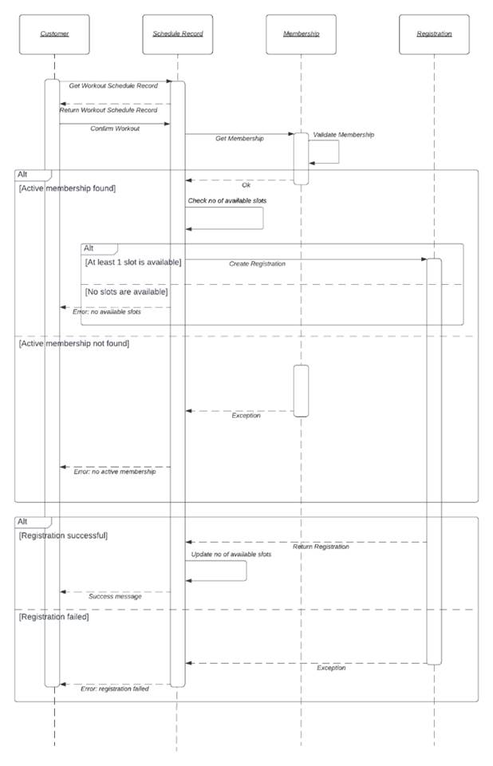
16. Prepare a sequence diagram for Figure 1. Keep it as close to the description as possible, but when the details are lacking, rely on your assumption.
17. Read the diagram in Figure 4, i.e. describe what it designs. Reflect on it, its correctness, deficiencies (if any). When reflecting on it, use the questions of the previous task.
18. What types of frames can be used in sequence diagrams? What is their purpose? Name at least 3 types and show an example of each.
19. Describe the process of designing an activity diagram. What constitutes the input for this diagram? Prepare a simple activity diagram and reflect on it. What are the main elements that make up an activity diagram? Where can I get additional detail complementing it? What are the options, if you want to specify the actor involved in actions/activities? Is it possible to include this in the activity diagram? What are other options? Mention at least several sources for this information. What elements can you use to enrich the activity diagram?
20. Prepare an activity diagram for Figure 1. Keep it as close to the description as possible, but when the details are lacking, rely on your assumption.
21. Describe the process of designing a statechart diagram. What are the key elements (and their types, if they are many) you should determine for your system and design with a statechart diagram? Which details might be missing? Where can I get additional details that complement it? Mention at least several sources for this information. What other elements can you use to enrich the statechart diagram? Prepare a statechart diagram and reflect on it.
22. How to simplify visual representation of your statechart, e.g., minimising the number of events/transitions? Provide an example.
23. Whether statecharts allow to save history of the object behaviour in the past? If yes, how can this be done? If no, how can this be done otherwise? Provide an example.
24. Whether statecharts allow to capture different perspectives of object behaviour? If yes, how can this be done? If no, what are alternative options you can use? Provide an example.
25. Read the diagram in Figure 5, i.e. describe what it designs. Reflect on it, its correctness, deficiencies (if any). When reflecting on it, use the questions of the previous task.
26. Prepare a statechart diagram for Figure 1. Keep it as close to the description as possible, but when the details are lacking, rely on your assumption.
27. What is business process modelling (guest lecture) special about, when compared to {class model, use-cases, sequence diagram, activity diagram, statechart}? Can one of the above be used for the same purpose as BPM? What are the key elements used for the BPM?
28. What are pros and cons of code generation tools? Reflect on your experience gained as a part of this course (or outside of it). Would you use it in the future? Why?
Figure 1
The food ordering system allows the user to order meals from a menu. When an order is made, the customer/user can decide if it will be picked up from the cafe or if delivery is needed, as well as how it will be paid for. Once it is done, the order is processed by the cook, i.e. the meal is prepared. As part of this, the cook not only prepares the meal that was ordered, but also checks and marks in the system whether any component/product needs to be ordered for future orders (a kind of inventory is done). Once the meal is ready and the status of the order is changed accordingly, the order is packed and either waits for the customer or is given for delivery. Depending on the selected payment method, the order is paid either immediately upon placing the order, or when it is received. Once the order is received by the customer, the order is marked as completed.
Figure 2
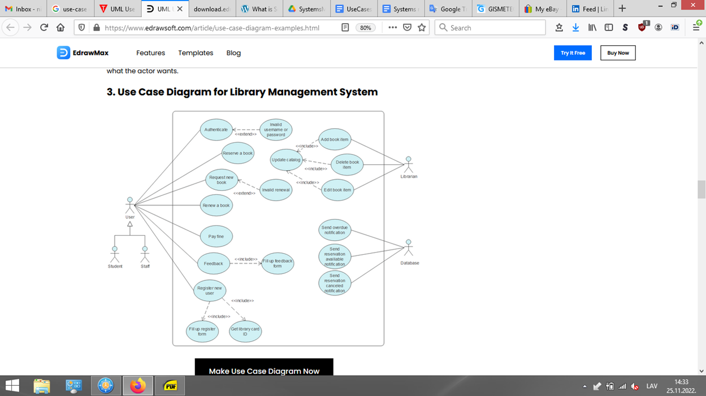
Figure 3
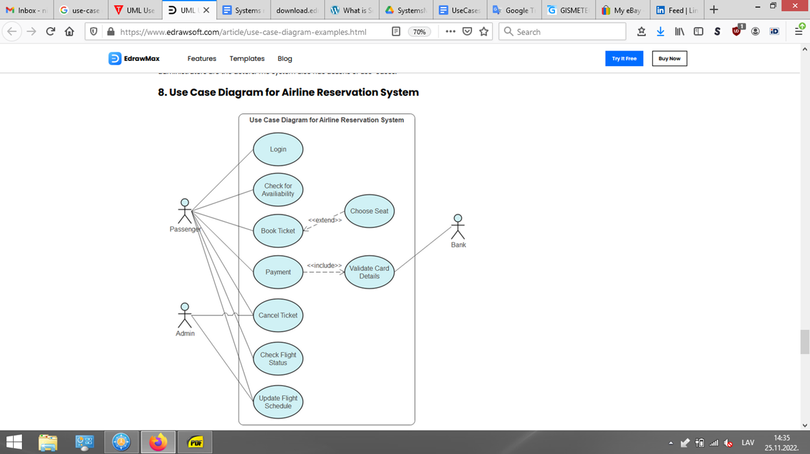
Figure 4.
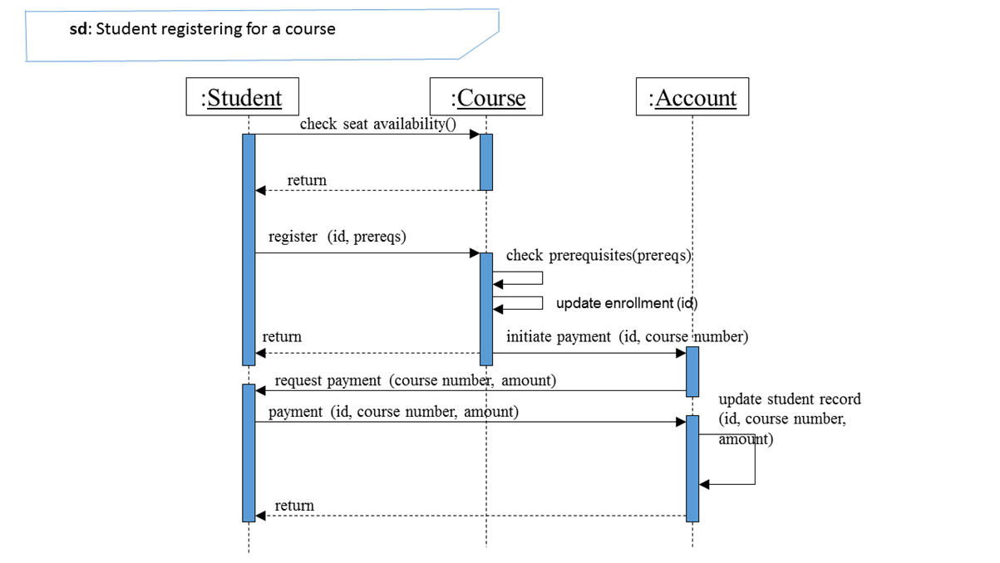
Figure 5.
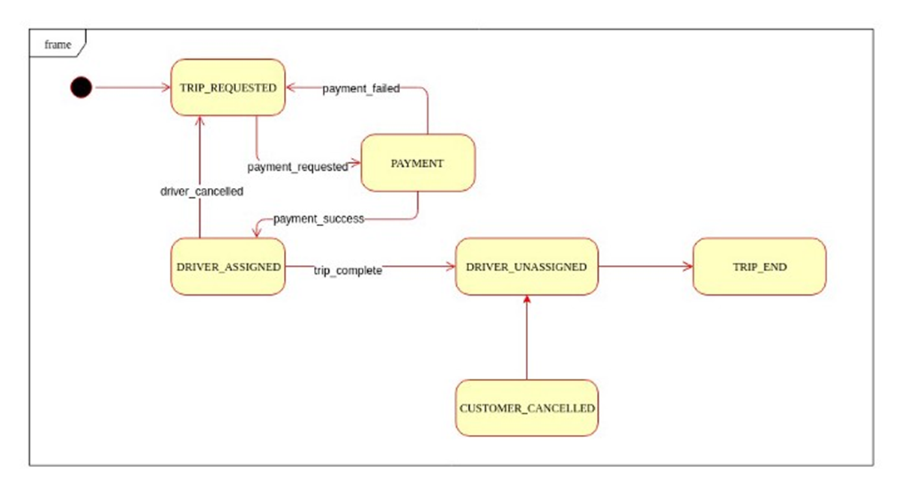